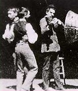

|
The Celluloid Closet
review by Carrie
Gorringe
The screen version of Vito
Russo's book on the history of the depiction of gays and lesbians in American cinema, The
Celluloid Closet, opens on a grainy image. The image is one from American cinema's
proto-cinematic past. Lasting no more than twenty seconds or so on screen, this film
captures in one static shot the spectacle of two men dancing together while a third plays
a fiddle near the base of a large megaphone. Shot in April 1895 and generally known to
film historians by the rather mundane title of Dickson Experimental Sound Film,
this film, (or filmic fragment, depending on your point of view) belongs contextually to
an era of several known levels of potentiality: it represents not only the accomplishment
of being able to present an image and a narrative, however crudely, to a mass audience but
also the attempt to simultaneously provide the final element in a complete movie-going
experience: synchronous sound accompaniment (it was over thirty years in the future). For
Russo, there was yet another potentiality contained therein: the first cinematic depiction
of homosexual activity, and with it, the tacit acknowledgment that gays and lesbians, as
the film's narration tells us, "have always been there."
A former archivist at the Museum of Modern Art in New York, Vito Russo
began collecting information during the 1970s (some might call it evidence) which
addressed the issue of how gays throughout cinematic history, even during the so-called
"repressive" period of the Production Code (1934 to 1961). His research often
provided inadvertent insights into attitudes toward homosexuality at all levels, some of
which, his writing intimated, he would have been better off for not having. In the
introduction to his book, Russo explains how, during dinner-party discussions of his work,
which he always described as "an exploration of gay characters in American
film", the response he would receive never contained any significant variation in
theme. "Oh, really," his tableside companion would respond, with the
also-invariable leer, "Are you using real people's names?" Whether the setting
was Manhattan or Fire Island, Russo discovered that everyone else was apparently more
preoccupied with a much different form of "telling."
But Russo's intent was never to "out" anyone against his/her
will. Rather, he was trying to amass and organize a substantial amount of evidence which
would testify to the historical existence of gay people; they were not, as certain
conservatives preferred to believe, the product of some form of spontaneous,
post-Stonewall historical generation. By extension, he was arguing for what, for want of a
better term, might be described as the "normalization" of gay life within modern
society. The approach that Russo used was never one of discrimination in reverse, a
tempting response for those who have suffered gross forms of victimization for intrinsic
and unalterable characteristics. Rather than adopting a universal condemnation of all
forms of heterosexuality, he generally took a higher road and directed his anger toward a
more appropriate target: those heterosexuals who were and are intolerant of basic human
rights for gays and lesbians.
And the history of that intolerance, as manifested in American film and
Russo's initial collation of materials, was substantial in scope. Even within the scope of
that very first film clip from Edison's studio, there was a seed of anti-gay derision: as
I recall, both of the men dancing together were doing so in a very self-conscious manner,
as if aware of how socially "aberrant" their behavior was. And, as the film and
book versions of The Celluloid Closet make painfully apparent, the following
decades demonstrated how this original self-consciousness dropped away, leaving only
derision and/or overt hostility as the guidelines for representing Wilde's "love that
dare not speak its name" (since Russo wrote the first draft of the screenplay for the
film version of his book, the film is, not surprisingly, remarkably loyal to its source,
for better and for worse). Indeed, Russo's guided tour through the representation of gay
and lesbian life on screen seems at times less like a history than a Baedecker of social
freaks as compiled by the most rabid homosexists. From the cross-dressing comedies of the
early teens, to the more overt development of the gay male "sissy" that
characterized much of the 1930s (think of a carpally-challenged nebbish whose interests
revolved solely around theatre, fashion and interior decorating with a heavy dose of
lavender), to pathetic creatures ashamed of their gayness who were ready to off themselves
at the first opportunity, gays and lesbians had very few representations in which to take
comfort as far as American film was concerned. The imposition of the Production Code in
1934 arrested most of the more obviously nasty stereotypes, but homosexuality, if conveyed
subtly, was still an acceptable undercurrent in the explanation of a character's physical
weakness, his penchant for bitchy gossip, or her "sinister" sexual tendencies
(such as the bloodsucking Gloria Holden in Dracula's Daughter of 1935). This more
"tasteful" approach was obviously not a concession to gay and lesbian
sensibilities, in its demonstration of how different gays and lesbians were from
"normal" society (and, if such people really did exist outside a movie screen,
heterosexuals could rest assured that, armed with a set of codes from Hollywood films,
they could decipher and detect homosexuals before they could do any "harm").
When younger filmmakers working in the mainstream during the 1950s tried
to bring more balance and maturity into attempts to address homosexuality on screen, such
boldness acted as a red flag to the censors, who would then wield their blue pencils with
more vigor. Among the casualties of bowdlerization were important works like the screen
adaptation of Tea and Sympathy (in the play, it was quite obvious that the young
man feared being gay; in the 1956 film, only the most subtle of hints about his
"manhood" were permitted). Even the lifting of the final Production Code
restrictions did not result in realistic representations of homosexuality; in William
Wyler's remake The Children's Hour (1962), based on Lillian Hellman's play of the
same name, poor Shirley MacLaine still must suffer the slings and arrows of
"compensating moral values" and commit suicide as penance for discovering the
lesbian side of her character. When MacLaine talks about the film thirty-four years later,
she makes it clear that there was so little awareness on the set as to what constituted a
lesbian lifestyle that no one even discussed the subject during the shoot. Despite the end
of de jure censorship, the de facto version prevailed, and the countervailing images of
gays and lesbians as either unhappy and suicidal or sexually rapacious continued, for the
good reason that many gays and lesbians in the film industry, as in life, could see no
sense in coming out of the closet only to find themselves in the crosshairs of social
disapproval. Until very recently, with the arrival of openly gay filmmakers like Gus Van
Sant, who were not reluctant to let their sensibilities flow in front of the camera, the
prejudice continued unabated, with very few, if any depiction's acting as a counterweight
to the mountain of negative images, and the clearing isn't really in sight.
Obviously, The Celluloid Closet is an ardent defense of the
right of gays and lesbians to see truthful images of themselves. At times, this ardor is
one of the few quibbles I have with The Celluloid Closet in either form: in their
pursuit of truth, both occasionally attempt to stretch it somewhat beyond reason. The
aforementioned experimental film from 1895 has some greater historical significance than
merely showing two men dancing together. As stated earlier, the film was shot in April
1895 by inventor (and Edison employee) W.K.L. Dickson as part of a vain attempt to save
Edison's dwindling Kinetoscope business (an early film viewer -- essentially nothing more
than a peep-show device, albeit large and cumbersome) by marrying image to sound. The film
may have picked up the title proffered by Russo -- The Gay Brothers -- elsewhere,
or it may have been an unofficial title, but the chief issue for film historians, and for
the film's participants, was one of sound, not sexual orientation (to those who would
seize upon this "omission" as first-hand evidence of homophobia in film studies,
I would respectfully suggest that there are many film scholars currently at work who would
have more than a vested interest in bringing to light any "neglected" truths
about this film, or any film, for that matter). On the most basic level, the two men might
have danced together simply because no woman was available at Edison's studio for the
purpose; there currently exists no evidence to prove otherwise. Whatever the case may be,
the film was probably never seen outside of the studio. Nevertheless, Russo provides no
background information to substantiate his choice of title, and Epstein and Friedman
merely repeat Russo's assumptions about the film verbatim, if for no other reason than it
is (if my memory and the sources I have investigated are correct) probably the only piece
of pre-1900 footage that displays two men in very close contact, thereby sustaining
Russo's thesis. Ironically enough, had Russo, Epstein and Freedman actually made only the
slightest of additional efforts to investigate other films made by the Edison company at
the same time, they would have found films that fit the hypothesis just as neatly and with
less historical uncertainty. Foremost among them were the frequent studies of the
then-renowned strongman Sandow, who always posed and performed in medium-close-up, bulging
muscles and bared midriff at the ready. Moreover, no less an authority on pre-1900 cinema
than Charles Musser has concluded that the earliest films were made "by men and for
men", thereby providing a strong case for Russo's assertion that gays were probably
present at the cinematic creation. But while this experimental film may or may not have a
gay subtext, it certainly does neither version of The Celluloid Closet any credit
to make claims that may not have any basis in fact.
Unfortunately, as Russo, Friedman and Epstein have quite ably
demonstrated, there is more than enough evidence of a homophobic mentality operating
throughout Hollywood's history to make up for any overeager leaps of logic. And some of
the worst stereotypes, ironically enough, occurred in the 1960's and especially in the
1970s, a period long outside the domain of the Production Code, but well within the
boundaries of the first flowering of Gay Liberation. Screenwriter Ron Nyswaner recalls the
words hurled at him as he was escaping from a gay-bashing, an episode that occurred just
after William Friedkin's controversial movie, Cruising (1980) was released. One
of Nyswaner's attackers, who worked in a movie theatre, yelled after him, "If you saw
the movie Cruising, you'd know what you deserve" -- perhaps to be
dismembered and floating in the Hudson River, a la the film's opening scene.
The recounting by Nyswaner of his harrowing brush with sociopathic
hate-mongers is illustrative of perhaps the most problematic issue for The Celluloid
Closet, one that also speaks directly to the most recent series of demands for
censorship of U.S. television and the Internet. Both of them revolve around the concept of
how images -- and the inclusion of only the visual in this case is deliberate -- influence
behavior. Underlying this concept is the assumption that the interpretation of images is
always universal and unequivocal, or, to put the matter more simply, everyone sees
everything in the same way, an assumption that has been challenged by students of
propaganda such as Ellul, et al, who have adduced beyond all reasonable doubt that
propagandistic techniques must effectively address the expectations and prejudices of
their intended audiences (it goes without saying that propagandists can persuade others to
accept other messages, but the process is slower, with more risk, and the new messages
still cannot stray too far from their audience's sensibilities). In other words, (pace
Althusser) propaganda is not a one-way form of communication shoved down the throats of
the "mindless" masses; the same "mindless" masses must participate in
their own "persuasion", as it were, by bringing something to the table, in each
case something that is affected by any number of non-media-based influences. Images alone
cannot be presumed to be the sole source of influence upon humanity in general, but the
acceptance of and/or lack of overt resistance to certain cultural underpinnings,
individually and en masse, is a key factor. Many of the commentators in The Celluloid
Closet correctly (and sometimes inadvertently) note the diverse ways in which images
were interpreted by audience members like themselves; screenwriter Arthur Laurents and
actor/screenwriter Harvey Fierstein have an on-screen dispute (courtesy of contrapuntal
editing) over the stereotype of the sissy which is quite illuminating in this regard
(Laurents loathes the sissy, while Fierstein takes a somewhat perverse pride in it).
But neither version of The Celluloid Closet is inclined to
accept this insight, because, in doing so, they would undercut their own message: the
belief, as spoken by Tomlin, that "Hollywood, that great maker of myths, taught
straight people what to think about gay people...and gay people what to think about
themselves." So, in following this argument to its logical conclusion, if negative
images provoke negative behavior, then centuries of hatred can be undone with the advent
of purely positive images. From this unspoken assumption, the film ends up presenting an
antipodal "chicken-and-egg" argument as it tries to prove simultaneously that
the images cause hatred and the hatred causes the images. What the film ends up doing on
occasion is chasing its own tail. In actual fact, the homophobia of Cruising and
other anti-gay films is nothing more than a reflection of beliefs already in play among
certain members of their audiences; using them as a cover for sanctioning discrimination
or violence against gays and lesbians is no less loathsome than the initial impulse to
cause harm. Therefore, the fear that the cinematic version of The Celluloid Closet,
or any film with a pro-gay message, will end up speaking only to the converted becomes, in
this case, the fear that dare not speak its name. But one can't whitewash a questionable,
if good-intentioned, ideology with a patina of excessive optimism. Despite the moral
rectitude of Russo's position on tolerance for gays and lesbians, Epstein and Friedman
must come to realize that this film is only one step in a very long journey, and not the
"ne plus ultra" in terms of persuasiveness.
Nevertheless, The Celluloid Closet is an entertaining and
invaluable document, and, despite its various missteps, no less of an indictment of
homophobic tendencies in the larger society. Particularly interesting are the excerpts
from the pre-Code films, items which are rarely seen and rather shocking in their sexual
candor, even to contemporary audiences. Some of the interviewees listed above provide, in
the course of their candid discussions, valuable insights into how the Production Code
affected their professional and personal lives. In particular, Gore Vidal is a most
compelling raconteur; his explanation of how the first chief of Hollywood's self-imposed
censorship body was chosen in 1922 ("at that time there were a number of unindicted
members of [Harding's] cabinet...") hilariously eviscerates any pretense surrounding
the impulse to censor. Moreover, Vidal's explanation of how he was able to implant a
subtle homosexual subtext in the relationship between Stephen Boyd and Charleton Heston in
Ben-Hur (1959) is worth the price of admission by itself, likewise Maupin's
commentary on Rock Hudson's on-screen persona. Over the film's credits, K.D. Lang sings a
reprise of the song Secret Love, associated with Doris Day and the 1953 film, Calamity
Jane, itself associated with a not-so-covert set of lesbian underpinnings in certain
scenes. And if, in the forty-three-year span of time between Day and Lang, the
"secret love" of gays and lesbians has become more of a secret opened than an
open secret, it still has a long way to go before it is "no secret anymore." In
this regard, The Celluloid Closet can take no little credit for detailing the
progress that has been made, as well as enumerating what needs to be done.
|
|
Directed
by:
Rob Epstein
Jeffrey Friedman
Narrated
by:
Lily Tomlin
Commentary
by:
Shirley MacLaine
Armistead Maupin
Harvey Fierstein
Gore Vidal
Richard Dyer
Tom Hanks
Arthur Laurents
Tony Curtis
Jan Oxenberg
Matt Crowley
Whoopi Goldberg
John Schlesinger
Susan Sarandon
Ron Nyswaner
Jay Presson Allen
Paul Rudnick
Susie Bright
Written
by:
Rob Epstein
Jeffrey Friedman
Sharon Wood
Vito Russo
FULL CREDITS
BUY
VIDEO
RENT
DVD
BUY
MOVIE POSTER |
[Shared Documents/General/Website/mediabar/mb.html]
|